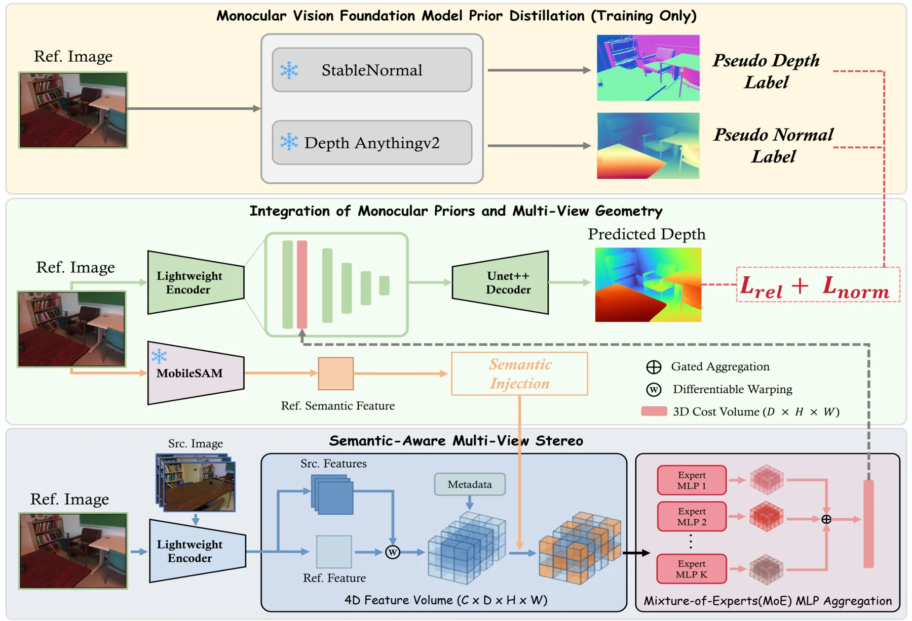
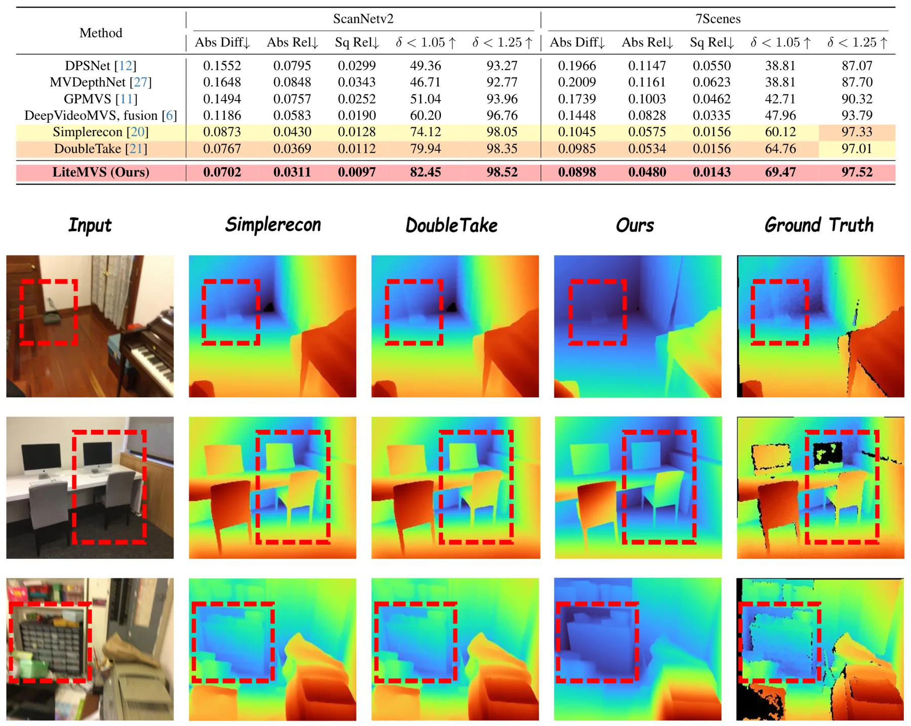
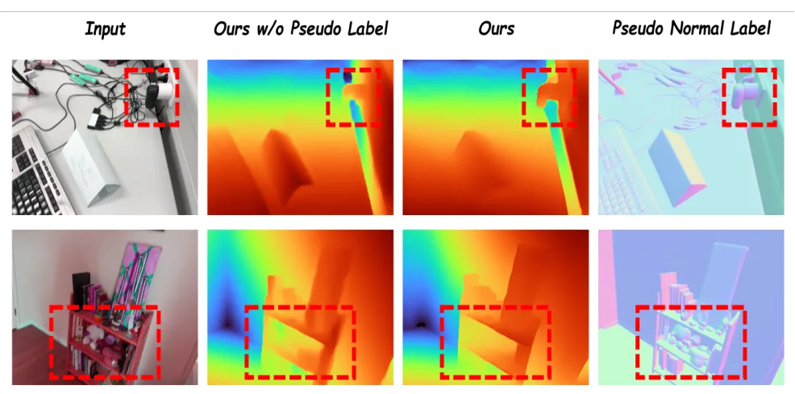
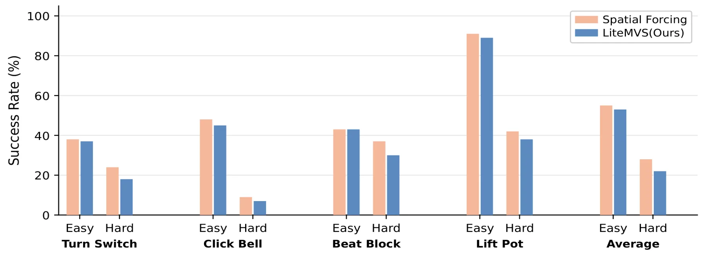
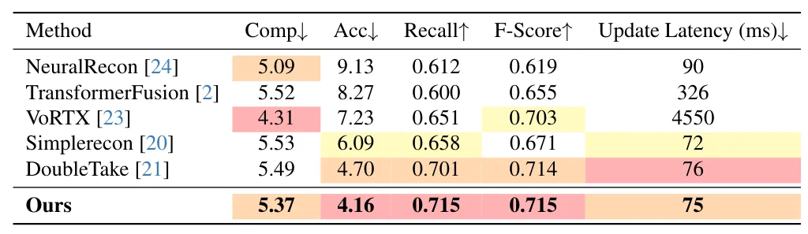
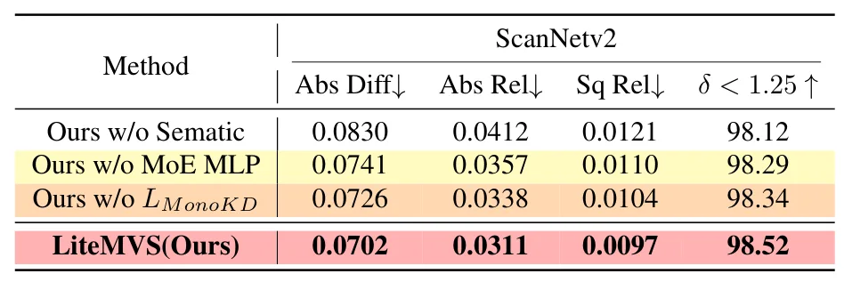
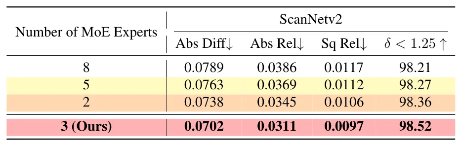
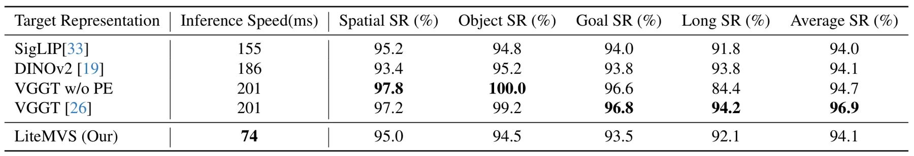

LiteMVS：通过基础模型蒸馏与专家聚合实现高效多视图立体LiteMVS: Efficient Multi-View Stereo with Foundation Distillation and Expert Aggregation
直接覆盖高效 MVS 和机器人三维感知，设计兼顾语义先验与几何约束；摘要没有给出具体 FPS、参数量或户外泛化。
一句话工作总结
把基础模型的结构先验蒸馏进轻量 MVS，并用 MoE 自适应聚合多视几何，以低推理成本改善弱纹理区域。
摘要
LiteMVS 是面向机器人与具身场景的轻量多视图深度估计模型，将 plane-sweep 几何推理与单目语义、结构先验结合。方法以轻量分割模型和大型视觉基础模型的知识丰富 cost volume，使用 Mixture-of-Experts 自适应聚合深度假设，并将基础模型几何先验蒸馏到网络中，从而不增加推理成本。ScanNetv2 和 7-Scenes 实验显示其兼顾深度、三维重建质量和效率。
Real-time 3D perception is crucial for robotics, augmented reality, and embodied intelligence applications. Existing multi-view stereo (MVS) methods primarily rely on geometric correspondences, which often fail in textureless or repetitive regions, while monocular depth models leverage strong image-level priors but lack robust multi-view geometric constraints. More importantly, in robotics and embodied manipulation scenarios, high-quality 3D geometry is not only essential for static reconstruction, but also serves as a critical foundation for learning temporally consistent 4D representations. To obtain visual representations with stronger structural awareness and greater potential for spatiotemporal extension, we present LiteMVS, a lightweight multi-view depth estimation model that integrates plane-sweep geometric reasoning with strong monocular semantic and structural priors. The central idea of LiteMVS is to efficiently inject high-level monocular knowledge, obtained from lightweight segmentation models and large-scale vision foundation models, into a multi-view stereo framework. In particular, LiteMVS enriches the cost volume with semantic descriptors and employs a Mixture-of-Experts (MoE) formulation to enable adaptive geometric aggregation across depth hypotheses. Moreover, geometric priors distilled from vision foundation models further strengthen monocular guidance without increasing inference cost. Through this design, LiteMVS not only improves depth estimation and 3D reconstruction quality in static scenes, but also provides a more reliable geometric foundation for subsequent temporal modeling and 4D representation learning. Experiments on ScanNetv2 and 7-Scenes demonstrate that LiteMVS achieves high-quality depth prediction and 3D reconstruction while maintaining competitive efficiency.
中文解读摘录
- 原题：Swimm3R: Splatting with Medium-aware SfM for Underwater 3D Reconstruction
- 作者：Minseong Kweon, Junaed Sattar
- 推荐评分：9.2/10
- 核心方法：把空气中几何先验蒸馏到前馈骨干，并用物理 head 联合回归水下成像参数、相机位姿和恢复点云；随后用带 Beta primitives 与散射感知几何梯度的 Underwater Beta Splatting 表示场景。
- 为何值得看：它不是单纯先增强图像再做 SfM，而是把散射、衰减、位姿和几何放进统一框架。论文报告相对 WaterSplatting 平均 PSNR 提升 1.47 dB，RRA@15/RTA@15 分别提高 2.0/2.4 个百分点；需进一步检查 Barbados 数据集规模、跨水体泛化和绝对尺度。
图表/页面预览

{kind=link}

{kind=link}

{kind=link}

{kind=link}

{kind=link}

{kind=link}

{kind=link}

{kind=link}
